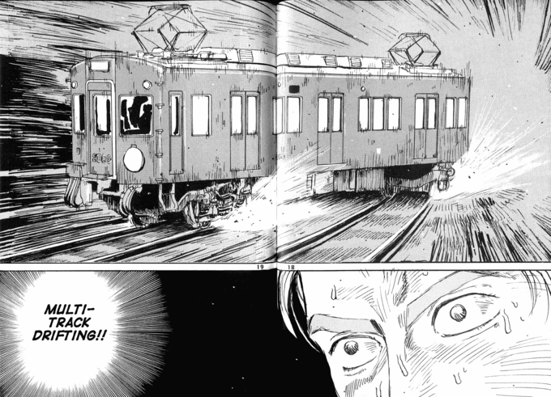
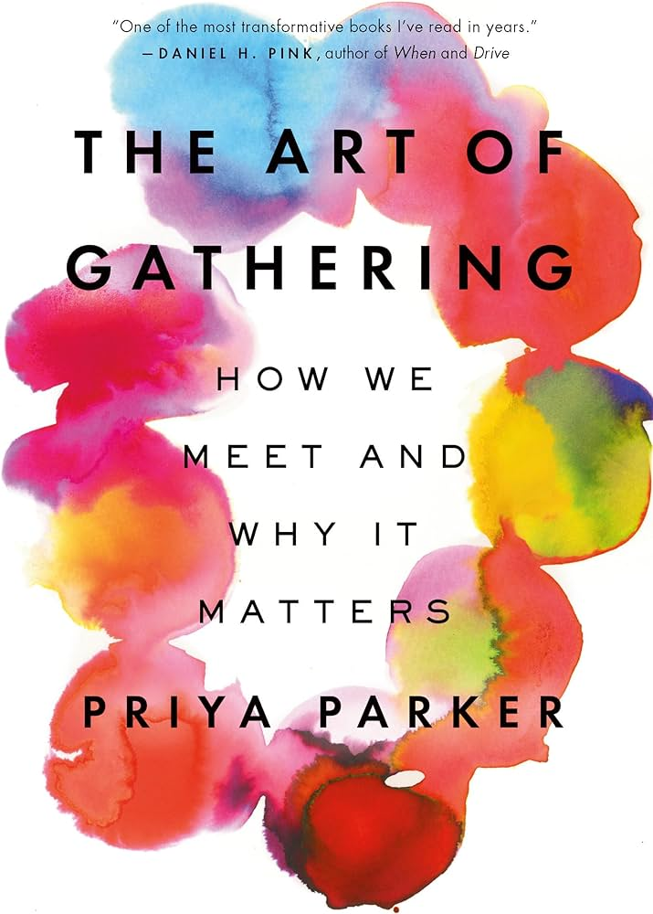
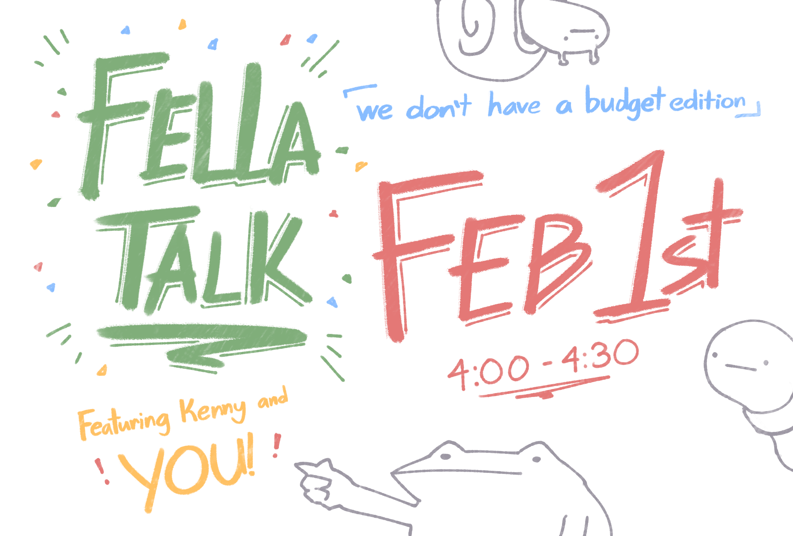
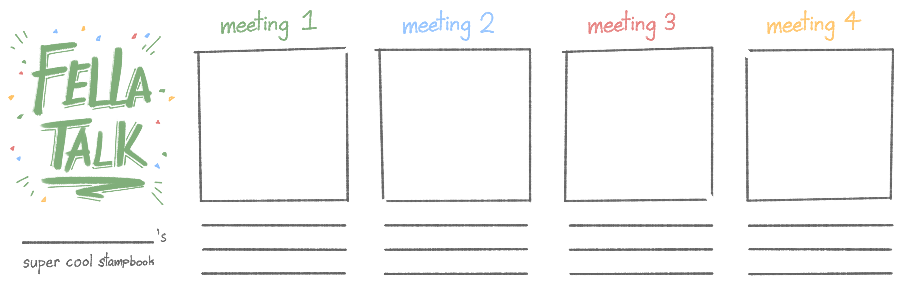
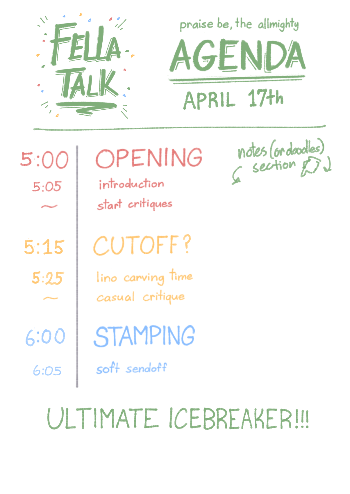

Currently, past our freshman year of the design program, the design cohort at UT Austin has become
incredibly divided as we explore different aspects of design, with our work ending up forgotten
about beyond the period of the class. My goal was to explore the role of grassroots organizations in
developing a propensity to share current and past work outside of class contexts for feedback and
critique, using the UT design cohort for small-scale tests. Through the use print as an artifact and
print as an activity, I conducted various user tests and workshops over the semester to discover how
print can be used to encourage the sharing of work or as a vessel of discussion. A final document
was created to share the ideas that I learned on a broader spectrum that others could take and apply
to their own communities.
details
tools
Illustrator, Indesign, Clip Studio Paint
deliverables
Case Study
Fella Talk Meetings
Fella Talk Booklet
timeline
Spring 2024
an abridged guide to hosting your own Fella Talk and other miscellaneous collaborative activities
To lay it out plainly, organizations set up by administration are inherently "less cool." I feel the
rigidity and importance of it all locks down chances to make deeper connections with others. As part of an
independent study with Cathryn Ploehn, I set out to study and define a "Fella Talk", my own version of what
a niche micro-organization should embody, and write a guide so others could learn how to structure the
communities they wanted to hold.
"Where are my Fellas?"
I thought about this a lot over the last 2 semesters. After I got to know everyone in my year in the intro
design classes, the student base split to focus on specific design roles or worked toward a minor. This was…
kind of a shame really since I think good design revolves around getting a good group of buddies who know
you well enough to critique you properly. While there are those kinds of outspoken critics in most classes,
a lot of the time the class has mixed student years, leading to a hesitance to give stronger critique due to
unfamiliarity and differences in design skills. My strongest critiques have been from sitting with my
friends and “shooting the shit” because we all have a pre-established level of trust and respect with each
other.
Moreover - classes sucked if there weren’t many people who I was already friends with. The design program’s
structure inadvertently separates people from their different design interests. With this and the chaotic
scheduling of design classes, I ended up not seeing many of my friends recently, and with the ones I did
see, I would only see brief glimpses of their work. And man was this socially isolating.
Some attempts to gather students in the past had mixed results. Our chapter of AIGA felt too large for close
discussion. The Friendsgiving Potlucks I held were too grand to hold consistently. What I wanted was a
regularly meeting small group that could meet up and just talk - about designs we worked on, the program,
whatever really. Something low-key and low-stress just to make it feel more intimate than some of the larger
organizations. With all of this, I decided to focus this study on developing the “grassroots small
community” idea that I yearned for, so that I could make a space to share design work and set time aside to
just talk with my fellas. A “Fella Talk” if you will.
I did want to include my current obsession with print into this somehow, and in the most superficial way to
explain it, “i thought it would be pretty neat, lol,” (which would come to bite me in the butt when fleshing
this idea out). While I do HEAVILY enjoy using technology, there is beauty in interacting with a physical
object. My time drawing art and my summer working on the RRK Folio and Personal Project Residency would grow
my love for creative print work that I wanted to share. Despite our program having an entire printing lab
and classes revolving around it, most others never really touched it which I think is a missed opportunity
and a massive bummer.
It’s important to note that I take the perspective of a self-proclaimed “Most Extroverted Introvert”, with
most of my time spent locked away in my room. I sometimes go out, but for the most part, I don’t do much
with others outside of class, so I had socially regressed in the past year. Not wanting to stay a hermit, I
treated this independent study as an unapologetic excuse to hang out with my friends and learn more about
what makes a hangout fulfilling.
Dawn of the Fellas
Research
For this independent study, I proposed using print as an artifact and print as an activity to help foster
communication. However, I couldn’t figure out how to merge these ideas with a critique session, without
multitasking and losing sight of my goal.

I had my first check-in with Professor Ploehn, my mentor for this independent study, where I discussed my
readings and overall project goals. As a base, I wanted to plan meetings around notable points of collective
pain and suffering in the year to provide a chance to unwind. I had a rough schedule planned out, but I was
recommended to run a crappy low-stakes meeting to see what I could air out before settling on my structure.
Notably, Professor Ploehn suggested running this meeting without the print component, so I could figure out
how to mesh it together. Keeping this advice in mind, I set out to create this community with my first step
- gathering the members.
Gathering People

The Art of Gathering by Priya Parker brings the concept of “Bobs'' in a community. Bobs aren’t actively
antagonistic, instead just existing within the group. However, by just existing in the space, they detract
from the group experience since each person has to stretch their attention out to an extra member who they
might not be particularly interested in. Aware of this, I decided to go with a suggested size of 6 people
for my curated group of fellas. Having more people could be nice, but there was the looming risk of
critiques going too long and stretching the experience to boredom.
I started sending messages to my friends to see if they were interested. There was a weird, almost imposter
syndrome-like feeling when reaching out like this. “Who was I to be trying to make this group?” “Were people
responding just because they wanted to help me with my projects” While I can’t deny there isn’t a tilted
dynamic with me as the host and researcher that makes the experience “less genuine”, it’s a tough hurdle
that one person needs to jump over so that groups can form, instead of constantly waiting for something to
start up.
I soon ran into my next problem - design student schedules are a pain to work around and left only a few
time slots to meet. I settled with Thursday as I was hoping the meets would serve as a nice end cap to
people’s school weeks, but this experience showed one of the big hurdles of organization. Even if everyone
was willing, it adds on to the host’s work. I had wanted to include other activities, but because of the
time constraints, I only had an hour and a half to work with.
In the end, I gathered 5 other people with an assortment of design interests and print experiences to be a
part of this initial group of fellas. Avery, Nhu, Chan, Salma, Abraham, and last but not least - Me.
Fella Preppin'
In her book, Priya says that a gathering has started before everyone has even met up. The expectations
surrounding the gathering excite people for what could come next and can have a great impact on how the rest
of the event goes. This idea goes down to the root of a gathering - the invitation. I think physical
invitations are special; they serve as memories of events in ways similar to movie tickets or commemorative
photos. Digital invites, while convenient, just don’t hold the same value. Wanting to get my hands dirty
with some designing, I went ahead and drafted an invite that would set the tone for my meetings.

The overall goal of the meetings was to make time to chill and share work. There was time to be students
during critique, but ultimately I wanted people to loosen up from their busy schedules. To channel this
energy into the invite, I decided to draw out the entire invite by hand like a crappy kid’s doodle.
The entire invite design process boiled down to spur-of-the-moment, “what I thought was most fun” decisions,
of course with some consideration of layout and hierarchy to make sure information was conveyed clearly.
Even the name, “Fella Talk”, was something that just came to me. It was something that just sounded stupid,
which in combination with the rest of the invite made the tone of these talks clear. Something like
“Critique and Printing Workshop” would give off a completely different and serious idea for the meeting.
Fella Talk’s goal was to be an “injection of stupidity” into the design student life where we could take a
break from the structure of classes.
Next, Fella Talk needed a place to meet. I had considered empty classrooms, but I avoided them as they had a
“serious and clinical energy”, which went against the casual nature of my event. I instead looked towards
our university’s Design Lab. It was one of the most “designery” spaces on campus and was much more inviting,
partly because the room had natural daylight and plants. The lab was also more familiar and accessible from
all around campus since people had classes in the same building. With the base structure finalized, I
printed out my invites and handed them out to the members.
Members seemed to appreciate being handed a physical invitation, and were surprised that they were receiving
something before the event had even started. With this, Fella Talk 0.5 was on track to begin.
Pre-Fella Observations
Fella Talk 0.5 had rolled up. As I was finishing up work, the fellas made their way into our designated
meeting space. One person was missing and after a few minutes passed, I eventually decided to call it and
start the meeting a few minutes after scheduled. This meeting was focused on getting input for future
meetings, so I wasn’t too concerned. With the fellas already mingling, I got ready to begin.
Space
This day in the lab was particularly empty. Since we wouldn’t be printing and were just discussing group
norms going forward, I didn’t deem it too necessary to create an “alternate world” for people to enter.
Still, I made sure that everyone sat together at the edge of the table to try and close us off from the rest
of the lab.
Fellas
For critique, people were against always having to bring something to show, for a good reason - a lot of us,
including myself, weren’t taking many project-based courses so there would be periods where we could have
nothing to show. Ultimately, we decided that everyone didn’t need to present a work for critique, but I
still encouraged people to bring something to show.
The time needed for critique was also up for discussion. Since we were working in a tight timeframe, I
wondered if we needed a timer so that crits could be balanced evenly. However, members were against a timer,
saying how it could make them feel rushed. Instead, they suggested having an agenda out on the table for
everyone to see, taking the responsibility away from me as the timekeeper while still setting a time for
critique. This agenda would also help to set a clear purpose for the meeting, detailing what to expect from
the meetings so members wouldn’t be confused.
To help plan future meets, we decided it would be best to have some kind of group chat instead of me
scrambling to contact everyone individually. This would also help make the group feel more cohesive, even if
I still was the one scheduling the meetings. We landed on using Instagram as our platform of choice because
it offered a good mix of intimacy and level of engagement compared to other options like email or group
texts.
Host
I’m an expressive person, someone who makes themself known in a room, so obviously I gave everyone a strong
and warm welcome before immediately falling into one of Priya’s pitfalls mentioned in her book - boring
logistics talk. In the long run, this discussion was useful, but this was an incredibly stiff way to
introduce what was supposed to be a fun series of meetings. Regardless, the logistics were important. Though
I had a rough idea of how I wanted the gathering structure to go, I wanted input from the rest of the group
so that our Fella Talks could address what they wanted out of this community.
Print
Initially, I wanted to showcase a variety of printing methods so that we’d be doing something new each time.
However, the group had a mix of printers and non-printers which could create disinterest and force a
“teacher position” on them. Moreover, I would have to assume an even higher role as a lecturer, making this
event more of a class instead of a simple hangout. Through discussion, we decided to focus on a single,
simple form of print - linoleum block carving. It was an easy process that most people could pick up in a
few minutes and quick enough to where one could start and finish a block within our allotted 1-hour time
frame.

With everything settled for now, it was time to end the meeting, and this meeting needed to end with a bang.
To commemorate this commencement of the fellas, I elaborately threw out stamp books for everyone. The books
had spots to stamp off when they came to meetings, and getting a stamp would serve as an informal send-off,
giving people the chance to leave early without disrupting the group dynamic. My hope with these books is
that it would drive a commitment to the group through a physical record of meetings, and would help to give
a memorable conclusion to each meet. As I stamped off everyone’s books, they all seemed excited to receive a
gift and eager to see what would come next as they headed home. Fella Talk 0.5 had come to a close and was a
great success in gathering information. Now, I just needed to implement this and wait for the next gathering
of the fellas…
It's Time for a Fella Talk!
With the .5 meeting done and the group's norms set, it was time to hold Fella Talk! We ended up having time
to hold 4 meetings throughout the year, and with these 3 meetings I learned plenty about group dynamics and
the many factors that affect them.
Space
The issue with using public spaces to hold meetings is that they aren’t always accessible. Multiple times, I
had to move the talks to a different location because of space constraints. Fella Talk 1 was notable in that
I had to make the change right before we started since there was too much noise in the lab to hold a good
conversation.
Despite my best efforts, we would find ourselves in the classroom next door quite frequently. The lack of
windows, dim lighting, and spread out tables made the space feel uncomfortable. The tables in the room were
laid out in a U shape which separated the group the first time we used the room. Every time after, we made
sure to either push the tables closer or sit closer in every room we used.
There were times where we used the Design Lab in a busy environment, which did end up causing some
disturbances. Friends from outside the Fella Talk would sometimes chime in and become Bobs. While there
wasn’t much I could do with people hearing in, I was able to close off the table with a large box, creating
our own smaller space within the design lab.
Overall, we did the best with the spaces we had on campus, but it would have been better if we had our own
spot
to hold meetings. There are some other areas where we could reserve rooms for meetings across campus, but
they
didn’t have the supplies we needed for our activities so we were chained to the Art Building and Design Lab.
Fellas
I had chosen fellas who had all had at least some interactions with each other, with some being much closer
friends than others and me serving as the glue holding everyone together. Everyone always seemed excited
coming into meets. The first meet had everyone already sitting down and talking while I was setting up,
while at the subsequent meets, people would immediately start carving before everyone had arrived.
Critique sessions started out rough but would smooth over after the first few meetings. I had initially
planned for people to choose to share at the meets, but the first meeting proved that if we didn’t pre-plan,
we would quickly run out of time. Future meets would use our Instagram group chat to discuss who had
something to bring to the table so we could alot time to each presenter. With this change, critique ran much
smoother. There were points in discussion where 2 or 3 people seemed to dominate discussion which did lead
to us running short on time and having to cut to the next presenter.
There were multiple occasions where I had the chance to introduce an unfamiliar fella into the group. Nhu’s
and Chan’s friend had shown up to a meeting where I had initially denied them, but by the time we were
beginning to wrap up, I had brought them back in. It was clear that while some of the fellas were not put
off by the sudden new addition, they couldn’t connect to the unfamiliar friend in the same way as the fellas
they already knew.
There was another moment when Avery was unable to come, and as a last minute addition, I had invited Colin
to join for the day. Colin was unaware of the group norms and would frequently break away from the group
during carving sessions, as well as not having anything prepared for critique because of the
spur-of-the-moment decision. However, he did contribute a fair amount into discussion when he was engaged.
Host
While I tried to be as ready for Fella Talks as I could, sometimes my work from right before would leave me
disheveled as fellas were entering. It was the worst at the beginning of the year while people were still
learning about the lab for their classes, but over time I was eventually able to deal with it.

This time I would make sure to get attention early on with *THEATRICS* by dramatically handing out the new
Fella Agendas. Each agenda gave us all a rough schedule to follow so we would stay on track, without that
duty falling on one person’s shoulders. Underneath that was my surprise for the meeting, the ULTIMATE
ICE-BREAKER. These ice-breaker questions were all incredibly unserious and were to be used if one didn’t
have a project to share during critique, as an attempt to encourage people to bring their projects and a way
to keep people engaged if they didn’t have anything.
As the meetings progressed, I noticed that people waned away from using the Ice Breakers. Whether it was
because they had other things to talk about or didn’t want to say a silly statement, the Ice Breakers had
served their purpose well.
The theatrics are integral by the way. To keep the meeting from straying too far into feeling like an
extension of classes, I acted like my normal exaggerated self to make sure people knew this event wasn’t
serious. During intros and critiques, I did straighten up a bit just to help direct the flow of conversation
but again, nothing too serious.
Print
I had continued to create physical invites for the first few meetings since the reception was positive, but
after the first one, I found that people weren’t reading them fully. They appreciated the gesture as it made
them feel special but the content would sometimes be ignored. After a while, I ended up just switching to
digital invitations.
It was clear that everyone was highly eager to start carving once we finished critique. There was a bit of
futzing around with the tools at the first meeting, but after everyone had everything figured out, the
fellas got to carving right away. I had thought people would make small stamps, but people sprung to making
images that took up the full 4x6 block as opposed to the small stamps I thought people would prefer.
Carving blocks seemed to be incredibly enthralling to the fellas - they were all obsessed with finishing and
didn’t want to leave until they were done. I knew that people were interested in carving, but I did not
expect how much the fellas would be into the process. But soon, one by one they had to leave, signing
themselves out by getting their stamp books stamped (which some people always forgot). This act of print as
a closing ceremony really helped tie the entire event together and left people excited to come to the next
meeting and carve more.
Post Meeting Analysis
I don’t think I had it in me to host multiple groups. Just running one was making me worried if people were
enjoying themselves, so I wanted to focus my energy on making this one group successful. I was still open to
testing this community structure with other people though, maybe as a one-time experience to see if my
findings would transfer to a different group of people.
Reviewing my notes, there were definitely ways to improve the meetings. My main concern was about how people
felt during critique time, as it seemed that some people in the group were more prone to discussion than
others. I know that some of these fellas are more introverted, but was there anything I could do to
encourage them to open up more? To get more information, I turned to my fellas for some interviews.
Fella Feedback and Reflections
To figure out how to cater to my Fellas’ needs, I gave a few opportunities for feedback. This group wasn’t
meant to be run by me alone of course - What makes a community is input from everyone honed together by the
host.
Space
Everyone preferred the Design Lab over the classroom next door, no question. The entire room felt very
clinical and academic, taking away from the casual experience. The closed off space did allow for a sense of
secrecy and a chance for gossip but otherwise most would describe it as “depressing”.
Seating generally always took on a U shape since we usually had to stay at the edge of tables to not get in
the way of other people using the space. The classroom’s tables were notably not all together, which ended
up isolating the two halves of the room from connecting, and people preferred if we sat closer or moved the
tables. The design lab’s tables were already pushed together so it was perfect for us.
The classroom’s separation from outsiders did also help with not feeling overwhelmed or watched. Some fellas
expressed that coming in felt a bit hectic with some of the meets happening with many students working on
projects in the Design Lab.
Fellas
The fellas all had great fun. While there were some things that could be tweaked, they all said they enjoyed
themselves, which was reliving on my end.
I did notice some patterns in discussion forming where the group was divided between “talkers” and
“listeners”, essentially splitting the room in half sometimes. Nhu had self-identified as a talker and would
usually sit along with Avery and Abraham. On other hand, Chan, Salma, and I considered ourselves as
listeners. While everyone did enjoy themselves, the talkers would end up dominating a lot of the
conversation, which is in no way bad, but it did leave little opportunity for the listeners to pop in. There
were some fellas who were worried that they were disturbing others or not letting them speak enough, but for
the most part, it didn’t have a big impact during the meets.
A thought that was brought up in the interviews was the idea of platonic and professional relationships.
Everyone knew each other and could all call each other friends, but there was still a professional barrier
between some members as they would only interact with each other during classes.
Host
At a few points during the meetings, I had to leave the room during both the critique and carving sections.
Everyone reported that my sudden absence didn’t have a strong impact on the dynamic. Everyone was already
comfortable enough with each other to talk without needing me to guide them.
Once I noticed my status as a listener, a lot was revealed to me that I could have done better at as a host.
There were many times where I refrained from guiding the conversation because I didn’t want to interrupt
someone’s thought, even if we were starting to go overtime. As a host, there is definitely a need to push
out of my comfort zone and embody a “talker persona” to help guide conversation properly.
Print
Coming into the meets, everyone was already somewhat interested in print or had done it before, but I didn’t
expect how much people would be into it. Everyone unanimously agreed that the print aspect was their
favorite part of the meeting as it was just a time to talk while also having a fairly mindless activity to
recede into if they didn’t feel like always engaging in conversation. The final moments of each meet where
everyone would print copies of their carvings for each other were a notable highlight point.
People really appreciate being given physical invites at first, although interest in them seemed to wane the
further we went into the year. Nhu specifically was already biased against me since she already receives a
lot of printed work from me, so it seems printed material is best used as an initial hook. The printed
agendas were always appreciated though, making sure the meetings stayed on time.
Henry Interview
I also took the chance to interview our Design Lab Manager, Henry, about his experiences hosting his own
crit clubs. After graduating he and others found that they wanted to build a space for critique outside of
class, as well as just wanting an excuse and motivator to make cool things. Like the ideals I wanted to
embody in my Fella Talks, these were fairly small events between friends which held a balance of working
critique and relaxing social play.
Misc. Tips from the Interview
An important note I wanted to highlight was that the first-time host discomfort seemed to be a shared
experience. It’s a big task to start up a new community, but as time goes on you become more comfortable in
your role.
Suddenly, New Fellas!
Since the beginning, I wanted to run a second group of fellas, but I felt it would be too much for me to
coordinate considering how hard it was to find a good time for everyone at the first Fella Talk group - not
to mention the amount of carving blocks I’d have to buy. At some point, I ran this idea with my friend
Gabby, which led to running several one-off “Rando” Talks with random groups to see how applicable some of
my findings were to larger audiences. Would some of the structures set in place work within an uncontrolled
and unknowing group? Who knows? Let’s try it out.
Space
Rando Talks ended up being held in various places like the Design Lab during both on and off hours, as well
as Gabby’s exhibition space. Once again, the space definitely had an effect on the overall mood of the meet.
The design lab meetings felt a bit more formal, especially when we had other people around us in the lab. In
comparison, the exhibition space was closed off and dimly lit, making a relaxing and homely experience, like
a dinner by candlelight.
Fellas
Gabby took advantage of her social media to invite a wider variety of people to different time slots, with
each meeting having different fellas (and one person who ended up coming twice!) With it being near the end
of the year, the fellas were tired and didn’t feel like critique, nor did they respond to our messages
asking if they wanted critique in the days leading up to the talk.
Fellas were completely random, with many not knowing each other and even being completely different majors,
which was unexpected. The meets with a truly random assortment required me and Gabby to help proctor
discussion as people would often shy away from conversation. However, once people finished carving and got
to printing, they would begin to open up and show interest in each other’s work, often getting excited at
the first print reveal and trading prints with each other.
Fellas were completely random, with many not knowing each other and even being completely different majors,
which was unexpected. The meets with a truly random assortment required me and Gabby to help proctor
discussion as people would often shy away from conversation. However, once people finished carving and got
to printing, they would begin to open up and show interest in each other’s work, often getting excited at
the first print reveal and trading prints with each other.
Host
These talks were led by both me and Gabby with different levels of input, ranging from full input from me to
being completely hands off. Prior to the first meeting, I had provided a draft copy of my findings to Gabby,
but for the most part I let her lead how she wanted. My own hosting style relies on my personal energy which
I think Gabby tried to replicate but wasn’t able to fully get into it. She was still getting into the
first-time host role as well, adding onto a bit of the awkwardness.
Print
Due to time constraints, Gabby also ended up using my agendas and invites as templates. From the get go,
invites were digital since we didn’t have the ability to hand out physical invites before the meets. With
Gabby as the host, I do think there was a bit of a missed opportunity to take in her own design styles in an
invite and see how different presentations could affect attendee mood.
At all Rando Talks, it took a bit but after everyone was settled down and carving, they REALLY went at it.
Block carving served as a perfect conduit for casual discussion and relaxation across all of my talks as it
allowed people to zone out and chat. If anything should be taken from what I’ve learned, it’s this. People
go absolutely BONKERS for printing.
Farewell, My Fellas
With that, my Fella Talks had concluded for the semester. I had completed my goals with great success. Print
as an artifact was made with the invites, agendas, and stamp books. Print as an activity was made through
our carving and stamping sessions. Most importantly, my excuse to hang out with my friends had paid off. It
was time to take a long deserved break…
And work on Fella Talk: The Book!
All of my findings were incredibly interesting but there were a few problems in how to present them.
My findings would be focused on the experience I wanted to cultivate
To refrain from reiterating what’s in the book, “an abridged guide to hosting your own Fella Talk and
other miscellaneous collaborative activities” is designed from the ground up to be a welcoming learning
experience about how to build a community. While I did greatly appreciate the readings I did and I
encourage people to read books, many of them could come off as intimidating or unnecessary to someone
who just wants to start a small group up. I chose to make my book only 18 pages and write it all in
“more simple and silly” language, in the spirit of the Fella Talks so that it could serve as an
introduction to the world of community design.
Since the semester was nearing a close, I wasn’t able to get much feedback or examples of its use but
various readers really appreciated the depth I went into the topic while still remaining digestible. It
is definitely worthwhile to see how this book could be used with the incoming freshman and other
organizations to see how my research applies to other kinds of communities.
I had done a lot this year, but there was still much more to learn about community design. What started
as me being upset with the current state of our program blossomed into a newfound passion in designing
community interactions and accompanying material for them. There is much to keep improving on, like
testing more groups of people, different activities, different hosts, etc. - many things that I was
regrettably unable to take on during this one semester. This is just the beginning of the FELLA TALKS!